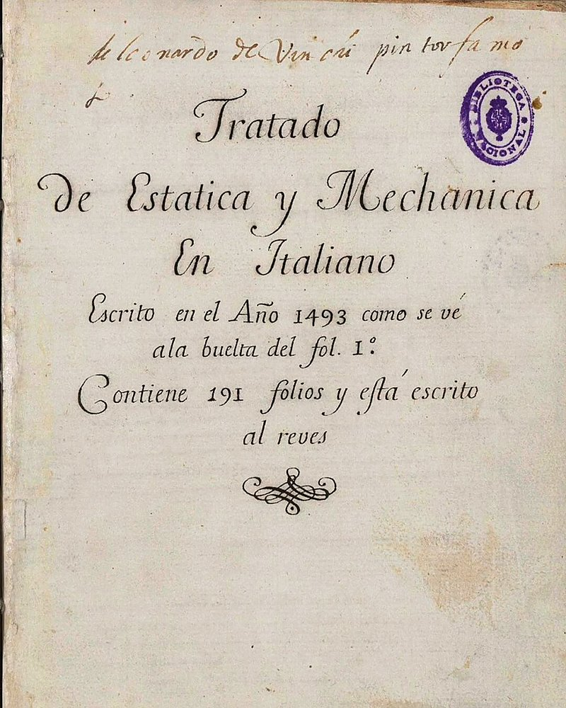

AI 日报 · 11月11日
新模型的能力，如何进入真实工作流
Anthropic 发布 Fable/Mythos 5.2；Builder 关注 MCP 事件、产品流程与多机代理，另看训练数据访谈和 GitHub Trending。
模型发布
代理工作流
训练数据
开源工具
6
Builder 动态
3
上榜仓库
1
公开视频
今日要点
深度对话
Latent Space：前沿实验室在购买什么数据
公开访谈邀请 Handshake AI 团队讨论专家数据、强化学习环境和评测任务。节目中的市场规模属于受访者说法。
从标注走向专业任务
节目讨论生物、金融与安全对齐等领域的专业数据需求。
RSS 精选
具身演示引发讨论
已检查 feeds.json 四个 RSS 源；其余近期条目与今日主题关联较弱。
Builder 动态
协议、流程与创作实验
Guillermo Rauch｜MCP Events 补上事件通知
Rauch 认为 MCP Events 能让代理订阅部署完成等跨会话事件，减少轮询；这是其对协议方向的判断。
Madhu Guru｜产品经理可以深入全生命周期
他建议产品负责人画出市场理解、设计、开发到上市的流程，再检查 AI 能否减少交接损耗。
Alex Albert｜把达·芬奇手稿变成可交互作品
Albert 展示把一份达·芬奇手稿 PDF 交给 Fable 5.2 后生成的交互作品；效果来自其个人演示。

Aaron Levie｜行业软件将迎来自主协作者
Levie 预计编码、电脑操作与领域知识结合，会把代理应用扩展到更多知识工作行业。
GitHub Trending
技能与设计系统持续上榜
11 月 11 日 GitHub Trending 页面快照；星标、分叉及语言为页面当时显示值。
今日思考
模型演示提供能力线索，生产价值仍要在具体流程中观察。
参考来源